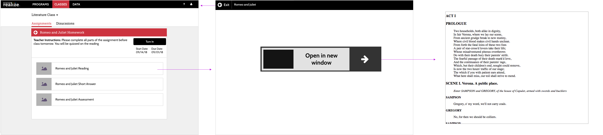

User Workflow
The current workflow has the student going to each part of the assignment on a new page. Below is an outline of the general user workflow for completing and turning in an assignment, as well as wires to what the UI used to look like.


Wireframes of the current assignment viewer
There are a few key problems with this current workflow. The constant back and forth between the actual part of the assignment, and the “November 3rd Assignment Page” meant that Alex would often lose track of his progress. Also, the turn in button, being at the top of the page is inconsistent with the user workflow, where the user would finish all parts, and then have to return to the top of the screen. Finally, having to click into an assignment that has a page to a link that has the reading selection is adding unnecessary clicks.